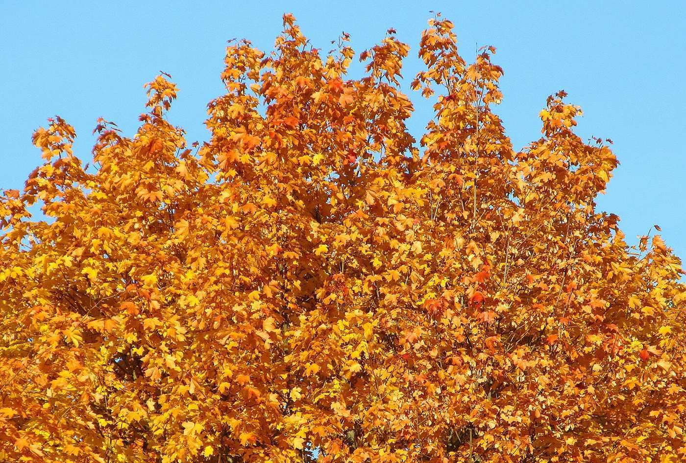
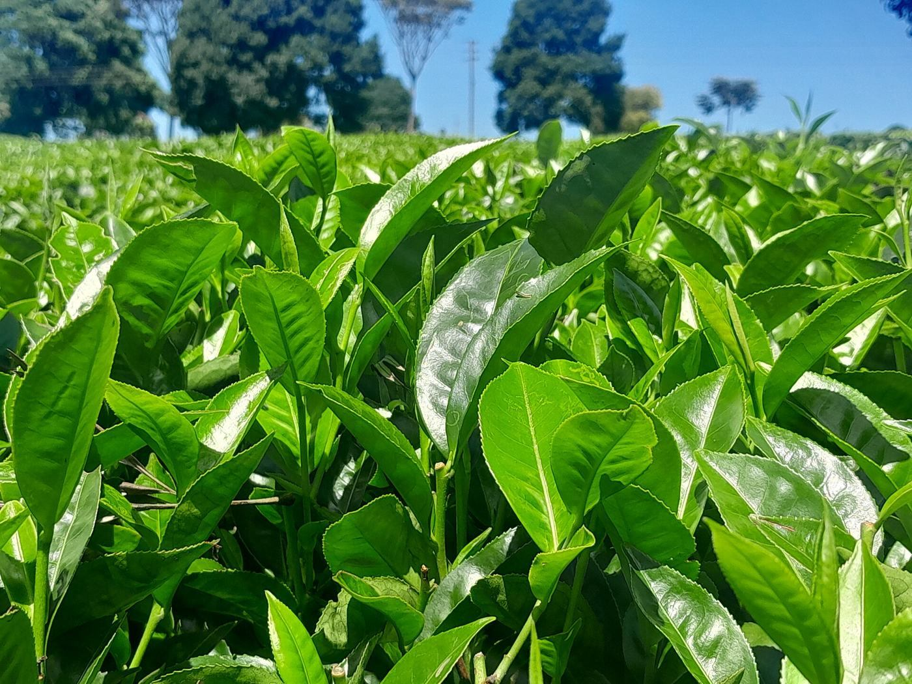

店のこと
六つの部位をひとつずつ
制作側の連想で、お店の理念・由来とは無関係です。実際の機器の仕様を示すものでもありません。



図の見かた
部位ごとの図
各行の図では、説明している部位だけを色で強調しています。
1吐出口
くみ上げた水を送り出す口。ホースをつなぐ筒状の部分で、本体の側面に張り出している。
2持ち手
本体の上にわたした、つかんで持ち上げるためのアーチ。
3モーター室
羽根を回すモーターをおさめた、円筒形の本体ケース。図の中心にあたる部分。
4フロートスイッチ
水位に合わせて浮き沈みする浮き。細いケーブルの先についている。
5吸込口
水を吸い込む、底に近い部分。細いスリットを並べた格子で、大きなごみをよける。
6電源コード
電気を届ける被覆つきのケーブル。本体の側面から出て、先にプラグがつく。
お店のこと
わかっていること
確認できているのは所在地とInstagramのみです。営業時間・メニュー・価格などは準備中で、このページでは断定しません。

写真はイメージです。お店のものではありません。